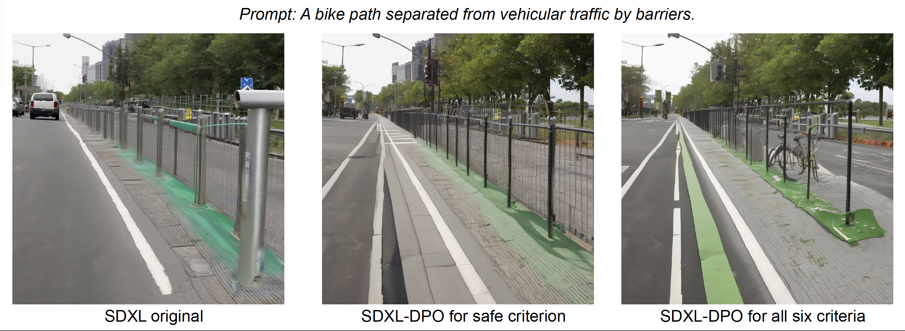

<!DOCTYPE html>
<html lang="en">
<head>
    <!-- Meta Tags -->
    <meta charset="UTF-8">
    <meta name="viewport" content="width=device-width, initial-scale=1.0">
    <title>Research Paper - Mid-space</title>
    <meta name="description" content="Mid-space Research Paper: Aligning Diverse Communities’ Needs to Inclusive Public Spaces using AI tools.">
    <meta name="keywords" content="Mid-space, Research Paper, Inclusive Public Spaces, AI, NeurIPS 2024, Urban Design">
    <meta name="author" content="Wedesign">

    <!-- Open Graph Meta Tags -->
    <meta property="og:title" content="Research Paper - Mid-space">
    <meta property="og:description" content="Explore the Mid-space research paper that aligns diverse community needs with inclusive public spaces through innovative AI tools.">
    <meta property="og:image" content="https://mid-space.one/assets/images/paper-image.jpg">
    <meta property="og:url" content="https://mid-space.one/paper.html">
    <meta property="og:type" content="article">

    <!-- Twitter Card Meta Tags -->
    <meta name="twitter:card" content="summary_large_image">
    <meta name="twitter:title" content="Research Paper - Mid-space">
    <meta name="twitter:description" content="Explore the Mid-space research paper that aligns diverse community needs with inclusive public spaces through innovative AI tools.">
    <meta name="twitter:image" content="https://mid-space.one/assets/images/paper-image.jpg">

    <!-- Structured Data -->
    <script type="application/ld+json">
    {
      "@context": "https://schema.org",
      "@type": "ScholarlyArticle",
      "headline": "Research Paper - Mid-space",
      "description": "Mid-space Research Paper: Aligning Diverse Communities’ Needs to Inclusive Public Spaces using AI tools.",
      "image": "https://mid-space.one/assets/images/paper-image.jpg",
      "author": {
        "@type": "Person",
        "name": "Your Name"
      },
      "publisher": {
        "@type": "Organization",
        "name": "Mid-space",
        "logo": {
          "@type": "ImageObject",
          "url": "https://mid-space.one/assets/images/logo.png"
        }
      },
      "datePublished": "2024-12-05",
      "mainEntityOfPage": {
        "@type": "WebPage",
        "@id": "https://mid-space.one/paper.html"
      }
    }
    </script>

    <!-- Google Fonts -->
    <link href="https://fonts.googleapis.com/css2?family=Roboto:wght@400;700&display=swap" rel="stylesheet">

    <!-- Font Awesome for Icons -->
    <link rel="stylesheet" href="https://cdnjs.cloudflare.com/ajax/libs/font-awesome/6.0.0-beta3/css/all.min.css" integrity="sha512-Fo3rlrZj/k7ujTnHq6zQ5/Jt5Vv8gUPK/PgKjG1hgZHR1KJ+vWBbZ27ZKAXSf4VhUYxvMqenGEXBw2OxW4RR2w==" crossorigin="anonymous" referrerpolicy="no-referrer" />
    
    <!-- Favicon -->
    <link rel="icon" href="https://mid-space.one/assets/images/favicon.ico" type="image/x-icon">

    <!-- AOS (Animate On Scroll) -->
    <link href="https://cdnjs.cloudflare.com/ajax/libs/aos/2.3.4/aos.css" rel="stylesheet">
    <script src="https://cdnjs.cloudflare.com/ajax/libs/aos/2.3.4/aos.js"></script>

    <!-- Custom CSS -->
    <link rel="stylesheet" href="https://mid-space.one/assets/css/styles.css">

    <!-- Google Analytics -->
    <script async src="https://www.googletagmanager.com/gtag/js?id=YOUR_TRACKING_ID"></script>
    <script>
      window.dataLayer = window.dataLayer || [];
      function gtag(){dataLayer.push(arguments);}
      gtag('js', new Date());

      gtag('config', 'YOUR_TRACKING_ID');
    </script>
</head>
<body>
    <!-- Body Content -->
</body>
</html>

</head>
<body>
    <!-- Header -->
    <header>
        <div class="container">
            <div class="logo-container">
                <a href="https://unesco-studio.umontreal.ca/" target="_blank">
                    
                </a>
                <a href="https://mila.quebec/en/ai4humanity/applied-projects/artificial-intelligence-alignment-for-inclusion-aiai" target="_blank">
                    
                </a>
            </div>
            <nav>
                <ul>
                    <li><a href="index.html">Home</a></li>
                    <li><a href="paper.html" class="active">Paper</a></li>
                </ul>
                <button class="toggle-button" aria-label="Toggle navigation">
                    <i class="fas fa-bars"></i>
                </button>
            </nav>
        </div>
    </header>

    <!-- Paper Section -->
    <section class="paper-section" data-aos="fade-up" style="padding-top: 200px;">
        <div class="container">
            <!-- Paper Title and Authors -->

            <h1>Mid-space: Aligning Diverse Communities’ Needs to Inclusive Public Spaces</h1>
            <h3>
                Shravan Nayak<sup>1,2</sup>, 
                Rashid Mushkani<sup>1,2</sup>, 
                Hugo Berard<sup>2</sup>, 
                Allison Cohen<sup>1</sup>, 
                Shin Koseki<sup>1,2</sup>, 
                Hadrien Bertrand<sup>1</sup>
            </h3>
            
            <!-- Affiliations Section -->
            <div class="affiliations">
                <p><strong>Affiliations:</strong></p>
                <p><sup>1</sup>Mila – Quebec AI Institute, <sup>2</sup>Université de Montréal</p>
            </div>
            
            <!-- Abstract Section -->
            <div class="abstract-section">
                <p><strong>Abstract:</strong></p>
                <p>
                    The ability to create visual representations of urban public spaces is a unique skillset that confers disproportionate power and influence over the city’s architectural outcomes. Our goal is to democratize that power; putting easy-to-use visualization tools in the hands of marginalized community members so that they can expand their influence over the spaces they occupy. Furthermore, we aim to finetune these visualization tools using images that align with localized notions of equitable, diverse and inclusive public space. To achieve this, we built the Mid-space dataset. It contains preferences for urban public spaces based on criteria such as inclusivity, diversity and comfort. In this paper, we discuss our dataset development process, analyze the annotations obtained and demonstrate the potential for aligned models.
                </p>
            </div>
            

            <!-- Download and View Links -->
            <div class="paper-links">
                <a href="https://arxiv.org/abs/XXXX.XXXX" target="_blank" class="btn">View on arXiv</a>
                <a href="assets/papers/AIAI_MID-Space_Pluralistic_AIignment.pdf" target="_blank" class="btn">Download PDF</a>
            </div>
        <!-- Full Paper Content -->
        <div class="paper-content">
            <h2>1. Introduction</h2>
            <p>
                Public spaces are built to serve the economic, social and political needs of local communities [7]. Urban designers and landscape architects play a key role in shaping these environments, employing visual tools such as drawings, images and 3D models as a primary medium to communicate their ideas [2]. These visual representations guide the development and experience of public spaces, influencing how these spaces are realized and how different community needs are addressed [5]. However, as sociologists have long argued [9], space is not a neutral backdrop but is socially produced through relationships of power and control. Consequently, the visual representations used by designers are not merely aesthetic choices but inherently shape who benefits from or is marginalized by these choices.
            </p>
            <p>
                As cities continue to evolve and diversify, we should consider opportunities to democratize the visualization process beyond the designers to include a wider group of community members. Newfound AI capabilities, particularly text-to-image (T2I) models, reduce the barriers to entry, enabling people of all backgrounds to take part in the visualization process. The remaining challenge is how to ensure that the generated image aligns with what the user had in their own mind, creating an authentic illustration of what they would like to see.
            </p>
            <p>
                To this end, we present the <strong>Montreal Inclusive and Diverse Spaces (MID-Space)</strong> dataset, to align AI-generated visualizations with pluralistic human needs and preferences. Developed in coordination with a dozen community organizations through a series of workshops, the dataset includes textual prompts, corresponding AI-generated images, and annotations about pair-wise preferences with respect to one (or multiple) criteria. This dataset can serve as a resource among AI alignment researchers seeking to produce imagery that aligns with the preferences of the individual. Furthermore, it can serve as a tool among urban designers, used to obtain crowd-sourced input on the design of public spaces.
            </p>
            <p>
                In summary, the main contributions of our work are twofold:
            </p>
            <ol>
                <li>We introduce MID-Space, a preference alignment dataset designed to bridge the gap between AI-generated visualizations and diverse communities' preferences in public space design.</li>
                <li>We demonstrate the dataset's utility by fine-tuning Stable Diffusion XL with preference alignment techniques, enhancing AI output alignment with pluralistic human values.</li>
            </ol>

            <h2>2. Related Work</h2>
            <h3>Preference Alignment Datasets</h3>
            <p>
                Preference alignment datasets have significantly improved the quality and alignment of T2I models [1, 4, 6, 17, 21]. Notable examples include Simulacra Aesthetic Captions [14], which contains 238,000 synthetic images rated for aesthetics, and Pic-a-pick [8], which features over 500,000 preference data points. Similarly, Image Reward [20] assesses images on alignment, fidelity, and harmlessness, besides ranking multiple images for the same prompt. Human Preference Score (HPS) [19] and its follow-up, HPS v2 [18], offer large-scale binary preference pairs, and train reward models that accurately capture human preferences. Relative to the literature, the MID-Space dataset is unique in terms of its: i) domain focus in urban design; ii) six alignment criteria that emphasize markers of equity and inclusion; and iii) annotators representing the needs and priorities of minority populations in Montreal.
            </p>

            <h3>Generative-AI in Urban Planning</h3>
            <p>
                AI is beginning to play a transformative role in the domain of urban planning. For instance, Stable Diffusion was used to integrate AI-generated graffiti with building façades to simulate interactions between evolving city structures [16]. Similarly, researchers have investigated how generative algorithms reshape collective memory by studying visitor engagement with real and AI-generated images, providing insights into spatial perception [15]. AI models have also been developed to generate day-to-night street views, enhancing perceptions of safety and auditing urban environments [10]. Furthermore, AI-generated visuals of car-free cities have been shown to significantly increase public support for sustainable transport policies [3]. To the best of our knowledge, this is the first work that explores alignment research in the context of urban planning.
            </p>

            <h2>3. MID-Space: Dataset Creation</h2>
            <p>
                The MID-Space dataset was developed in multiple phases, demonstrating a commitment to and collaboration with vulnerable community groups in Montreal. We outline the steps involved in the creation of the dataset below. The project followed best practices for citizen collaboration and community engagement and was approved by the appropriate Research Ethics Committee.<sup>1</sup>
            </p>

            <h3>3.1. Criteria Selection</h3>
            <p>
                To create a dataset of equitably designed public spaces, we first needed to determine how equity would be defined and evaluated. The process began in 2023 with three workshops, each involving 18 to 23 participants from diverse community groups. Participants reviewed images of Montreal’s public spaces and engaged in discussions about the most important attributes that made the spaces inclusive. From these workshops, six criteria emerged: accessibility, safety, diversity, inclusivity, invitingness, and comfort. More details can be found in Appendix A.
            </p>

            <h3>3.2. Annotator Selection</h3>
            <p>
                We worked with a group of 16 annotators who were identified with the support of twelve community organizations. Our criteria for annotator selection included those living in Montreal and having at least one (and in some cases, multiple) minority identity markers. The demographic markers of our annotators included women, LGBTQ+ individuals, Indigenous peoples, immigrants, people with disabilities, racial and ethnic minorities, and the elderly.
            </p>

            <h3>3.3. Prompt Collection</h3>
            <p>
                Participants were then convened for an additional session wherein they were divided into five groups of 4-5 participants. Each group included a combination of 2-3 citizens, one urbanism professional, and one AI expert. These groups were tasked with generating as many prompts as possible based on distinct scenarios that encompassed common public space typologies, amenities, and ambiances in Montreal. From this workshop, 440 prompts in total were collected. To expand the dataset further, these prompts were input into a large language model (GPT-4o [11]), which generated an additional 2,910 prompts. We employed three different prompting strategies, detailed in Appendix B, to ensure the synthetic prompts mirrored human input and captured diverse public space typologies and features.
            </p>

            <h3>3.4. Image Generation</h3>
            <p>
                We used Stable Diffusion XL [13] to generate images for the collected prompts. To ensure consistency in output style and avoid confounding variables, we opted to use a single text-to-image model. To make the images differentiable, we created 20 images per prompt by varying key parameters such as guidance scale, steps, and seed. From these images, we selected the four that were most distinct using a greedy strategy based on CLIP similarity scores (Appendix C).
            </p>

            <h3>3.5. Human Annotation</h3>
            <p>
                We created an accessible interface to ensure annotators of all backgrounds could annotate effectively. The participants were asked to compare two images which were shown side by side. Annotators evaluated each pair of images along three of the six criteria. Participants used a slider to indicate their preference on a continuous scale, ranging from -1 (indicating preference for the left image) to +1 (indicating preference for the right image). If the annotator had no clear preference between the images for a given criterion, the slider could be left in the middle. Before starting, participants attended workshops to familiarize themselves with the platform and the evaluation criteria. More details about the platform are provided in Appendix D.
            </p>

            <h2>4. Data Analysis</h2>
            <p>
                This section offers an overview of the composition and characteristics of our dataset, with a specific focus on the prompts and human annotations found within the MID-Space dataset.
            </p>

            <h3>4.1. Prompts</h3>
            <p>
                Our dataset consists of 3,350 prompts that cover a wide range of public space scenarios. The prompts vary in length, with an average of 37 words. They encompass over 3,000 distinct public space concepts, converting various amenities, typologies, and ambiances. Figure 1 (left) illustrates the diversity of concepts represented in our prompts.
            </p>
            <figure>
                
                <figcaption><em>Figure 1 (Left)</em>: Word cloud containing various entities related to public spaces present in our prompts.</figcaption>
            </figure>

            <h3>4.2. Human Annotation</h3>
            <p>
                A total of 16 participants, representing diverse communities, contributed to the annotation process, resulting in 42,131 annotations. Each annotation reflected preferences for up to three criteria. However, in 13,266 instances, no criteria were selected, potentially due to the complexity or ambiguity of the options. Some participants exhibited this indecisiveness more frequently than others. For the remaining annotations, participants contributed between 1,000 and 7,300 annotations each, with an average of two criteria selected per image pair. This offers a valuable opportunity to develop models that capture individual preferences. Figure 1 (right) displays the distribution of annotations across the six criteria. In total, we obtained 60,425 image pairs annotated for one of the six criteria. Notably, the "inclusive" criterion received the fewest annotations, possibly due to its ambiguity or the difficulty in evaluating this attribute. In contrast, "inviting" and "comfortable" garnered the most annotations, likely because these criteria are more closely tied to aesthetics and are easier to assess.
            </p>
            <figure>
                
                <figcaption><em>Figure 1 (Right)</em>: Number of preference annotations collected from participants for six criteria.</figcaption>
            </figure>

            <h2>5. Experiments</h2>
            <p>
                To evaluate the capacity of the MID-Space dataset to adapt model outputs, we finetuned Stable Diffusion XL using preference alignment techniques, specifically Direct Preference Optimization [17]. For each criterion, we trained a new model, aligning each model with community preferences. We also developed a comprehensive model that integrates all six criteria to explore how different criteria interact and influence one another. More details can be found in Appendix E.
            </p>

            <h3>5.1. Qualitative Results</h3>
            <p>
                The generated images were evaluated by experts in urban planning and AI on two types of spaces: indoor and outdoor. While the MID-Space dataset includes only outdoor public spaces, we tested the model’s performance on indoor environments to assess its generalization. General trends such as the presence of people, improved seating arrangements, and better handling of surface transitions and spatial enclosure were observed. However, the finetuned model struggled to visualize accessibility features such as ramps, tactile surfaces, and signage. Examples for the two cases are outlined below and more can be found in Appendix F.
            </p>

            <h4>5.1.1. Outdoor Public Space Analysis</h4>
            <p>
                Figure 2 provides an illustrative example for this case. The image generated by SDXL (left) lacked cohesion with undefined paths and poor accessibility. The inclusivity-finetuned version (middle) had better enclosure but still had uneven paths and limited accessibility. The model finetuned on all six criteria (right) showed smoother transitions, defined paths, and improved seating, enhancing accessibility and spatial integration.
            </p>
            <figure>
                
                <figcaption><em>Figure 2</em>: Images generated for the prompt given above by various models with the same seed, number of generation steps (50), and guidance scale of 5.</figcaption>
            </figure>

            <h4>5.1.2. Indoor Public Space Analysis</h4>
            <p>
                Figure 7 shows an example for this case. The initial design (left) featured poorly integrated artwork in a rigid space. The diversity-finetuned version (middle) did not improve the artwork integration but displayed more vibrant and well-lit pieces with added connecting passages in the corridor. Similarly, the version finetuned on all criteria (right) introduced abstract artwork but still struggled with artwork integration. However, it added continuous lighting, improved ventilation, and opened the side walls of the corridor, making the space more connected. The presence of people contributed to a more dynamic environment.
            </p>
            <figure>
                
                <figcaption><em>Figure 7</em>: Images generated for the prompt given above with a particular focus on diversity, by various models with the same seed, number of generation steps (50), and guidance scale of 5.</figcaption>
            </figure>

            <h3>5.2. Fine-Tuning Details</h3>
            <p>
                We fine-tuned Stable Diffusion XL using Direct Preference Optimization (DPO) for each criterion and a comprehensive model that integrates all six criteria. The training process utilized an effective batch size of 64 and a learning rate of 1e-8 with a 20% linear warmup. The β parameter was set to 5000. Individual models were fine-tuned for 500 steps, while the comprehensive model was trained for 1,500 steps. We found that increasing the training steps led to improved results, and we believe further training could enhance performance even more. All experiments were conducted on a single NVIDIA A100 80GB GPU.
            </p>
            <p>
                We normalized the continuous preference values into binary values to better align with the requirements of DPO. However, future work could explore the use of continuous values to capture more nuanced preferences, potentially improving model alignment with finer-grained human judgments.
            </p>
            <p>
                When training the comprehensive model on the entire dataset, we encountered cases with conflicting annotations. Specifically, for some image pairs, one image was preferred for certain criteria while the other was favored for different criteria, as annotators could select up to three criteria per image. To resolve these conflicts, we applied a majority voting system, selecting the image with the most criteria in its favor as the preferred one. In cases of a tie, the winner was chosen randomly. We found 5,050 such instances where annotations conflicted. We believe that this issue could be better addressed by developing more sophisticated algorithms that account for the criteria as signals, and more generally, by creating approaches that consider the pluralistic nature of this dataset.
            </p>

            <h2>6. Conclusion and Limitations</h2>
            <p>
                In this paper, we introduced the MID-Space dataset, designed to align AI-generated visualizations with diverse human preferences in urban public space design. Through community engagement workshops, we identified six key criteria for creating equitable public spaces. We demonstrated the utility of the MID-Space dataset by fine-tuning Stable Diffusion XL using DPO resulting in AI models capable of generating visualizations that reflect localized values of equity and inclusion.
            </p>
            <p>
                However, a subset of annotations included contradictory preferences across criteria. To properly account for those, better training methods are needed, that account for the criteria as signals, and more generally, by creating approaches that consider the pluralistic nature of this dataset.
            </p>
            <p>
                MID-Space has limitations including: a small sample size, challenges in generalizing annotations to the level of the demographic group and de-noising techniques that reduced nuance. In the future, we look to enhance the number of annotators and develop more robust guidelines to improve annotation consistency. Additionally, we want to explore better training techniques to capture more nuance and further enhance model performance and alignment with human preferences.
            </p>

            <h2>7. References</h2>
            <ol>
                <li>Clark, K., Vicol, P., Swersky, K., & Fleet, D. J. (2024). Directly Fine-Tuning Diffusion Models on Differentiable Rewards. arXiv preprint arXiv:2309.17400. [https://arxiv.org/abs/2309.17400]</li>
                <li>Corner, J. (1999). The Agency of Mapping: Speculation, Critique, and Invention. In D. Cosgrove (Ed.), <em>Mappings</em> (pp. xx-xx). Reaktion Books.</li>
                <li>Dubey, R., Hardy, M. D., Griffiths, T. L., & Bhui, R. (2024). AI-generated visuals of car-free US cities help improve support for sustainable policies. <em>Nature Sustainability, 7</em>, 399–403.</li>
                <li>Dpok, D., et al. (2023). DPOK: Reinforcement Learning for Fine-tuning Text-to-Image Diffusion Models. arXiv preprint arXiv:2305.16381. [https://arxiv.org/abs/2305.16381]</li>
                <li>Harvey, D. (2008). The Right to the City. <em>New Left Review, 53</em>, 23–40.</li>
                <li>Huang, S.-Y., Rico, E., Besems, J., & Gao, W. (2023). (IN)VISIBLE CITIES: What Generative Algorithms Tell Us about Our Collective Memory Schema. <em>Journal of Architectural Computing, 18</em>(2), 215–229.</li>
                <li>Jacobs, J. (1961). <em>The Death and Life of Great American Cities</em>. Random House.</li>
                <li>Kirstain, Y., Polyak, A., Singer, U., Matiana, S., Penna, J., & Levy, O. (2023). Pick-a-Pic: An Open Dataset of User Preferences for Text-to-Image Generation. arXiv preprint arXiv:2305.01569. [https://arxiv.org/abs/2305.01569]</li>
                <li>Lefebvre, H. (1974). <em>The Production of Space</em>. Blackwell Publishing.</li>
                <li>Liu, Z., Li, T., Ren, T., Chen, D., Li, W., & Qiu, W. (2024). Day-to-Night Street View Image Generation for 24-Hour Urban Scene Auditing Using Generative AI. <em>Urban Studies, 61</em>(1), 78–94.</li>
                <li>OpenAI. (2024). GPT-4 Technical Report. arXiv preprint arXiv:2303.08774. [https://arxiv.org/abs/2303.08774]</li>
                <li>Podell, D., English, Z., Lacey, K., Blattmann, A., Dockhorn, T., Müller, J., ... & Rombach, R. (2023). SDXL: Improving Latent Diffusion Models for High-Resolution Image Synthesis. arXiv preprint arXiv:2307.01952. [https://arxiv.org/abs/2307.01952]</li>
                <li>Pressman, J. D., Crowson, K., & Simulacra Captions Contributors. (2022). Simulacra Aesthetic Captions (Version 1.0). Stability AI. [https://github.com/JD-P/simulacra-aesthetic-captions]</li>
                <li>Rico, E., Huang, S.-Y., Besems, J., & Gao, W. (2023). (IN)VISIBLE CITIES: What Generative Algorithms Tell Us about Our Collective Memory Schema. <em>Journal of Architectural Computing, 18</em>(2), 215–229.</li>
                <li>Shih, N.-J. (2023). AI-Generated Graffiti Simulation for Building Façade and City Fabric. <em>Journal of Urban Architecture and Design, 12</em>(3), 45–60.</li>
                <li>Sorensen, J. (2024). Roadmap for Pluralistic Alignment. <em>arXiv preprint arXiv:XXXX.XXXXX</em>.</li>
                <li>Walace, B., Dang, M., Rafailov, R., Zhou, L., Lou, A., Purushwalkam, S., ... & Naik, N. (2023). Diffusion Model Alignment Using Direct Preference Optimization. arXiv preprint arXiv:2311.12908. [https://arxiv.org/abs/2311.12908]</li>
            </ol>

            <h2>8. Appendix</h2>
            <h3>A. Criteria Selection for Evaluation</h3>
            <p>
                MID-Space includes annotations based on six criteria: accessibility, safety, diversity, inclusivity, invitingness, and comfort. Figure 2 shows the definitions provided to the annotators for each criterion for the annotation task. Prior to the annotation process, we conducted a detailed workshop to explain the criteria and provide guidance on their use, ensuring annotators had a clear understanding while allowing for individual interpretation.
            </p>
            <figure>
                
                <figcaption><em>Figure 2</em>: Definitions of the six criteria shown to annotators for dataset annotations.</figcaption>
            </figure>

            <h3>B. Prompt Augmentation</h3>
            <p>
                We collected 440 prompts from annotators, each representing distinct scenarios related to public space typologies, amenities, and ambiances in Montreal. To expand the dataset, we supplemented these with synthetic captions generated by GPT-4o [11]. To ensure diversity, we incorporated a wide range of concepts drawn from public space literature, such as typologies like parks and wide walkways, amenities such as seating areas and streetlights, natural elements like forests and vegetation, locations such as suburban Montreal and old industrial ports, people such as First Nations and children, architectural elements like duplexes and houses, transportation modes including bike lanes and trams, artistic features such as street murals and art sculptures, different times like winter, nighttime, and Christmas, and animals such as dogs and raccoons. These concepts were used to increase the diversity of the concepts in the generated prompts. We employed three distinct prompting strategies to ensure that the synthetic prompts retained similarity to those generated by humans while covering a wide range of topics relevant to public space design. The specific strategies and prompts used for the LLM are outlined below.
            </p>

            <h4>B.1. Method 1</h4>
            <p>
                We randomly sampled 8-16 prompts from the human-generated set and used them as in-context examples for the LLM to generate new prompts.
            </p>
            <figure>
                <figcaption><em>Figure 3</em>: System prompt used Method 1.</figcaption>
            </figure>
            <pre>
            Your task is to craft detailed and imaginative prompts suitable for diffusion models like Stable Diffusion. These prompts should generate images illustrating the variety of Montreal's public spaces, capturing the community's diverse aspirations and values.

            Each prompt must be rooted in a specific scenario related to Montreal's public spaces. You will be provided with the scenario, keywords, and examples of prompts related to these scenarios. Using this information, your task is to create a series of diverse, contextually rich, and relevant prompts following a style similar to the ones given as examples. These should aim to generate images showcasing Montreal's public spaces from varied perspectives.
            </pre>

            <h4>B.2. Method 2</h4>
            <p>
                We provided the LLM with a detailed scenario which was also provided to the annotators during the initial prompt collection phase. Along with this, we also provided several keywords related to the public space concepts mentioned earlier. Additionally, we included 8 randomly selected in-context samples relevant to the scenario guiding the model to generate new prompts based on these concepts.
            </p>
            <figure>
                <figcaption><em>Figure 4</em>: System prompt used Method 2.</figcaption>
            </figure>
            <pre>
            Your task is to craft detailed and imaginative prompts suitable for diffusion models like Stable Diffusion. These prompts should generate images illustrating the variety of Montreal's public spaces, capturing the community's diverse aspirations and values. To achieve this, you will construct prompts using specific keywords provided for the following categories:
            Typology: The type of spaces you want to depict
            Elements: Distinct elements to include in your scene
            Context: The scenarios in which your elements are placed
            Style: The artistic style or technique that the image should emulate, defining its visual appearance
            Mood: The overall mood or atmosphere of the image

            You will also be given a few examples that have been generated using these keywords. Using all this information create a complete, coherent prompt similar in style to the examples. Aim for creativity and diversity in your prompts, ensuring they cover several aspects of the keywords given. These should aim to generate images showcasing Montreal's public spaces from varied perspectives.

            Note:
            1. Ensure your prompts integrate some of the provided keywords to encapsulate the community's desired visions of Montreal's public spaces but ensure that style and length is same as the examples.
            2. Do not mention the style and mood explicitly. Use keywords that bring out these attributes naturally.
            3. The style and the length of the prompts should be similar to the examples given. The prompt should be less than 77 tokens.
            </pre>

            <h4>B.3. Method 3</h4>
            <p>
                This method used a template-based approach where specific keywords related to public space concepts in the original prompts were masked. We instructed the LLM to replace these masked keywords with concepts from a wide variety of public space themes. This ensured the prompts closely followed the structure of the human-generated ones while incorporating a diverse range of concepts.
            </p>
            <figure>
                <figcaption><em>Figure 5</em>: System prompt and in-context sample used Method 3.</figcaption>
            </figure>
            <pre>
            Your task is to craft detailed and imaginative prompts suitable for diffusion models like Stable Diffusion. These prompts should generate images illustrating the variety of Montreal's public spaces, capturing the community's diverse aspirations and values.

            For this task, you will be provided with a templated sentence containing several placeholders. Each placeholder represents a specific category (e.g., [Typology], [Location], [Activity], [Amenity]). Alongside the templated sentence, you will receive a list of words or phrases corresponding to each category. Your objective is to select the most appropriate word or phrase from each list to fill in the placeholders, creating a meaningful and grammatically correct sentence.

            The structure of the templated sentence might require minimal modifications to ensure grammatical correctness and cohesiveness once the placeholders are filled.

            Example 1:

            Template: a [Typology] for [People] in [Location]

            Keywords:
            Typology: artistic eco friendly park, pedestrian street, all identities, two-story residential street, park, neighbourhood public space, urban square, wide walkway
            People: elderly person, adults, first nations, children, teenagers, adults and elderly people, black and white families, a mother and her child, people, various ethnicities
            Location: plateau, wellington neighbourhood, old port, montreal `s chinatown, old montreal, Montreal, downtown montreal, mont royal street

            Output: A neighbourhood public space for children, teenagers, adults and elderly people in Montreal

            <more examples>
            </pre>

            <p>
                We calculated Jensen-Shannon Divergence (JSD) [22] scores to measure the difference between the generated prompts and the human-provided data. Higher JSD values indicate greater divergence from human prompts, while lower values suggest closer alignment. We found that Method 1 and Method 2 produced prompts that deviated more from the human prompts, with JSD scores of 0.53 and 0.58, respectively, compared to Method 3, which had a JSD of 0.4. These results demonstrate that all three methods contribute to generating a diverse range of prompts, with Method 3 being more aligned with the human data.
            </p>

            <h3>C. Image Generation</h3>
            <p>
                We used Stable Diffusion XL to generate images for each prompt. During an initial annotation workshop, participants indicated that it was difficult to meaningfully differentiate between the images. To address this, we generated 20 images per prompt by varying several hyperparameters, including seed, denoising steps, and guidance scale. From these 20 images, we applied a greedy selection method to identify the 4 most diverse images based on CLIP similarity scores. The method, detailed in Algorithm 1, selects images that minimize similarity to previously chosen ones, ensuring diversity among the selected images.
            </p>
            <figure>
                
                <figcaption><em>Figure 6</em>: Images generated for the prompt given above with a particular focus on safety, by various models with the same seed, number of generation steps (50), and guidance scale of 5.</figcaption>
            </figure>
            <pre>
            Algorithm 1: Selecting the 4 Most Diverse Images Using CLIP Similarity Scores

            Input: similarity matrix S of size n × n, number of diverse images k = 4
            Output: Indices of the selected diverse images selected_indices

            1. n ← len(S)
            2. selected_indices ← []
            3. first_index ← argmin (mean(S, axis=1))
            4. Append first_index to selected_indices

            5. For j = 1 to k-1
                a. min_similarity ← ∞
                b. next_index ← -1
                c. For i = 0 to n-1
                    i. If i not in selected_indices
                        A. current_similarity ← max(S[selected_indices, i])
                        B. If current_similarity < min_similarity
                            1. min_similarity ← current_similarity
                            2. next_index ← i
                d. Append next_index to selected_indices

            6. Return selected_indices
            </pre>

            <h3>D. Human Study Details</h3>
            <figure>
                
                <figcaption><em>Figure 7</em>: Web interface used to collect the data for MID-Space.</figcaption>
            </figure>
            <p>
                Figure 7 shows the web interface we developed to collect the data. Users could express their preferences by moving a slider to the left or right, depending on which image they preferred and how much they preferred it. Additionally, users could click on the purple dot next to each criterion to view its definition.
            </p>

            <h3>E. Experiment Details</h3>
            <p>
                For fine-tuning Stable Diffusion XL using Direct Preference Optimization (DPO), we closely followed the hyperparameters from the original paper. We used an effective batch size of 64 and a learning rate of 1e-8 with a 20% linear warmup. The β parameter was set to 5000. Individual models were fine-tuned for 500 steps, while the comprehensive model, which incorporates preference pairs from the entire dataset, was trained for 1,500 steps. We found that increasing the training steps led to improved results, and we believe further training could enhance performance even more. All experiments were conducted on a single NVIDIA A100 80GB GPU.
            </p>
            <p>
                We normalized the continuous preference values into binary values to better align with the requirements of DPO. However, future work could explore the use of continuous values to capture more nuanced preferences, potentially improving model alignment with finer-grained human judgments. When training the comprehensive model on the entire dataset, we encountered cases with conflicting annotations. Specifically, for some image pairs, one image was preferred for certain criteria while the other was favored for different criteria, as annotators could select up to three criteria per image. To resolve these conflicts, we applied a majority voting system, selecting the image with the most criteria in its favor as the preferred one. In cases of a tie, the winner was chosen randomly. We found 5,050 such instances where annotations conflicted. We believe that this issue could be better addressed by developing more sophisticated algorithms that account for the criteria as signals, and more generally, by creating approaches that consider the pluralistic nature of this dataset.
            </p>

            <h3>F. Qualitative Results</h3>
            <p>
                Figure 8 shows additional examples of images generated by the finetuned models. The results highlight the strengths and limitations of our approach in aligning AI-generated visuals with human preferences across different criteria.
            </p>
            <figure>
                
                <figcaption><em>Figure 8</em>: Images generated for the prompt given above by various models with the same seed, number of generation steps (50), and guidance scale of 5.</figcaption>
            </figure>
            <figure>
                
                <figcaption><em>Figure 9</em>: Images generated for the prompt given above with a particular focus on accessibility by various models with the same seed, number of generation steps (50), and guidance scale of 5.</figcaption>
            </figure>
        </div>
    </div>

    <!-- Contact Information -->
    <section class="contact-info" data-aos="fade-up">
        <div class="container">
            <p>
                <strong>For more information, contact:</strong>
                <a href="mailto:rashidmushkani@gmail.com">rashidmushkani@gmail.com</a> |
                <a href="https://www.rsdmu.com" target="_blank" rel="noopener noreferrer">www.rsdmu.com</a>
            </p>
        </div>
    </section>

    <!-- Footer -->
    <footer>
        <div class="container">
            <p>&copy; 2024 Mid-space - UNESCO Chair in Urban Landscape & Mila. All rights reserved.</p>
            <p>
                <a href="LICENSE">Template License (MIT)</a> | 
                <a href="https://github.com/wedesignone/mid-website-template" target="_blank" rel="noopener noreferrer">
                    <i class="fab fa-github"></i> View Template on GitHub
                </a>
            </p>
        </div>
    </footer>

    <!-- JavaScript for Carousel and Navigation Toggle -->
    <script src="assets/js/scripts.js"></script>
    <!-- Initialize AOS -->
    <script>
        AOS.init({
            duration: 1200,
            once: true,
        });
    </script>
</body>
</html>
